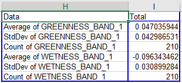
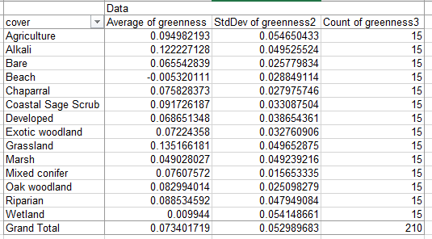
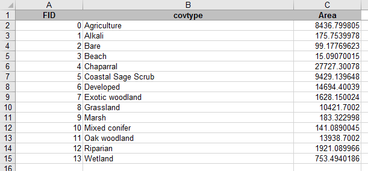
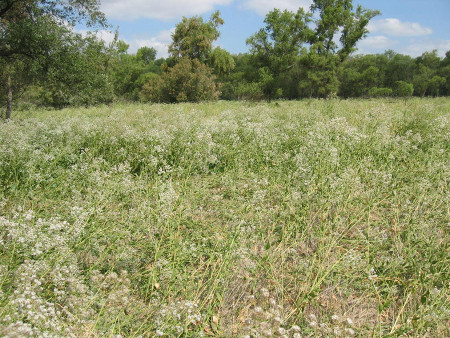
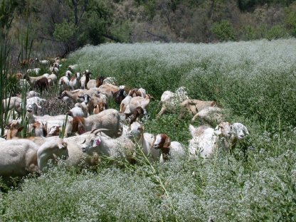

As you learned in lecture, different sampling designs are appropriate for different types of estimation tasks. We will use two of the common probability sampling designs, Simple Random Sampling (SRS) and Stratified Random Sampling (StRS), to estimate the average greenness and wetness within the San Dieguito River watershed - I thought you might be getting tired of NDVI, so I use the Tasseled Cap transformation on the spring 2011 LandSat images, and we will work with greenness and wetness as the quantities of interest.
In addition to the two good sampling designs, we will use a bad one to see why it's bad - we will use convenience sampling to see how making measurements at locations that are convenient does not necessarily produce good results.
If we were measuring greenness and wetness in the field, we would only know the measurements we collect, but wouldn't know the population parameter. Since this is a simulation of sampling in the field, though, we can measure NDVI for every pixel in the map and calculate the mean - I've done this for you, and the mean for greenness is μ = 0.0844, and for wetness it is μ = -0.0923 (wetness and greenness values are relative, so negative numbers are not a problem). We will compare the sample-based estimates we get to these known population values to see whether our estimates are unbiased.
We'll start with the method that you are supposed to avoid, so that we can compare it with the two probability sampling methods.
Start a new map, and add both the "greenness.tif" and "wetness.tif" raster grids to your table of contents - it's in the lab9 folder on the P: drive. You can also add the watershed boundary ("sdrp_watershed.shp") from the same folder, we'll be using it later. Put the NDVI layer on top so you can see it.
If you look at the two layers you'll see that they show different patterns in the landscape - greenness is like NDVI, in that it measures the amount of green, growing vegetation is in the pixel, and it primarily contrasts near infrared reflectance (Band 4) with the other bands. Wetness is an independent measure of moisture, and it contrasts mid-infrared bands (5 and 7) with the others. The big, obvious difference is that water bodies are not green, but they are very wet - you'll see they are black in the greenness image but white in the wetness image.
To simulate a sample of convenience, we will sample greenness and wetness from the pixels that fall at random locations along major roads running through the watershed. Roads tend to be placed very non-randomly, in the flatter portions of the landscape, and we would expect the land cover along roads to be affected by this. Thus, even if we generate random points along the road, the roads themselves are non-randomly placed, which may bias our estimates of greenness and wetness.
1. In ArcMap add the file roads_gt25.shp to your project. These are roads in the watershed that have traffic speeds at or over 25 mph.
2. Generate random points along the roads. Open the ArcToolbox (click on the icon with the little red toolbox) and select "Data Management Tools" → "Sampling" → "Create random points". When the tool launches, do the following:
Click "OK" to get your points. You'll see they fall along the roads within the watershed.
3. Get greenness and wetness measurements at the points on the road. For each of our sampling designs we will be overlaying points that we generate on top of the greenness and wetness maps, and "extracting" the map values from under the points to use as our sample of data. We'll then export the data to Excel, which is easier to use to calculate the standard errors and confidence intervals.
You should now have an output table in your Table of Contents (this causes the display to change to "List By Source" mode, so you'll see the locations of the files listed as well - either P: or S: depending on the file).
4. Export the table to an Excel file
If you open the newly created table in ArcMap, you'll see there is a field (column) for Rowid (the row number), OID (or "object ID", a serial number that helps ArcMap keep track of which point is which), "RANDOM_ON_ROADS" (which is the ID from the "random_on_roads.shp" file), an X and a Y column that contain the coordinates for the points, and finally the "GREENNESS_BAND_1" and "WETNESS_BAND_1" columns that have the data.
Note that you can get some statistical information for any column in an ArcMap table without using any analysis tools - if you right-click on "SP11_NDVI" and pick "Statistics", you will get a report that gives a frequency histogram, and some summary statistics.
But, we need to export the data to Excel to do the calculations we want to do.
5. Calculate the mean and 95% confidence interval. Now you will calculate the estimates (average, standard deviation, standard error and 95% confidence intervals for each variable). This is not easy to do in ArcMap, but it is straightforward in Excel - fire up Excel, and open your green_wet_roads.xls file.
**Note: the exported Excel file has the first row with the variable names "frozen", meaning that as you scroll up and down through the data the labels stay in the first row. This is fine, but initially you'll be positioned in the middle of the file, and you'll need to scroll to the top in order to see the PivotTable layout properly.**
To get the PivotTable you need do the following:
Once the template is active, do the following:
You now have the mean, standard deviation, and sample size for greenness.
Repeat these steps for WETNESS_BAND_1 - drag it into "VALUES" three times, set the first to "Average", the second to "StDev", and the third to "Count".
The default layout puts each summary statistic in a different column, which is bad - it's much easier to see everything if they are in several rows of a single column. You can change the layout by dragging the "Σ Values" from the "COLUMNS" box into the "ROWS" box.
When you're done you should have a table that looks like this (the numbers will differ, your random points will be different than mine, but the layout will match):
To calculate the confidence intervals, do the following:
Now, to get the confidence interval for wetness you just need to select cells J4 and K4, copy them, and paste them to J7 (Excel will know to paste both cells, you just need to select the left-most one).
6. Check whether the population means are inside of the intervals.
Do the following:
Save your Excel file (don't worry about the warning about saving to the old xls format, nothing bad will happen).
7. Record your results in the class database. You probably will find your intervals don't contain the population means, but single intervals don't tell us much about whether the sampling is biased - even if our sampling wasn't biased we would expect 5% of the samples we selected along roads to fail to contain the population mean, and for any single interval you may just have gotten one of those 5%. To see if we are missing the population mean more often than expected we will need to look at the entire class's results, so record your means, lower limits, and upper limits in the database on the course web site. We'll check how your confidence intervals compare as a class once everyone is done.
Simple random sampling in the watershed is done by generating random points within the watershed boundary, and measuring greenness and wetness at each point. Random points can in principle follow any number of different distributions, but usually we consider points to be spatially random if every x and y coordinate within the area is equally like to occur - in other words, we sample a uniform distribution of x coordinates and y coordinates, constrained to fall within the watershed boundary.
The process is otherwise the same - once you have random points you'll sample greenness and wetness, export the data to Excel to calculate the confidence intervals, and report your intervals to the class database.
1. Generate random points in the watershed. Select the "Create Random Points" tool again, but this time you will use the watershed boundary as the constraining feature class.
When they are created and displayed you'll see that they're distributed throughout the watershed, not just on the roads.
2. Sample wetness and greenness from these 210 points. Use the "Sample" command again. Use greenness.tif and wetness.tif as the input rasters, but change the point feature to srs. Call the output table "green_wet_srs", and put it in our sampling folder on S:. Click "OK" to run the tool.
3. Export the data to an Excel file. As before, export the table to an Excel file called green_wet_srs.xls.
4. Make your PivotTable, and calculate your confidence intervals. Now open green_wet_srs.xls in Excel, and calculate your means and confidence intervals.
The layout is the same as your roads tables, to the point that once you've set up the PivotTable you can copy and paste your confidence interval labels and formulas from the roads file into the srs file to do the calculation of lower and upper interval, and to check if the interval contains the population means - that is, select the cells from J1 to L7 from the roads file, copy them, and paste them to J1 in the srs file.
5. Report your results to the class database. Record your mean, lower limit, and upper limit to the class database and we'll compare them as a class.
This time we will stratify by major cover type. We shouldn't be too surprised to find that different types of cover have different greenness and wetness. Developed areas and fresh water are two of the cover types we have in the watershed, and we expect both of those to have very low greenness, but water bodies will have high wetness. Because of this, it's likely that our estimate of mean greenness and wetness for the watershed will be more precise (i.e. smaller standard error, narrower confidence intervals) if we stratify our sampling by cover type. On the other hand, the sample sizes will be smaller for each cover type, which will make the standard errors larger. Since these two factors work in opposition to one another, we will see whether we're better off on balance with stratified sampling or SRS.
Bear in mind that the purpose of stratified sampling is to come up with a single estimate of the population mean - we often also make use of the information in each strata, but the strata means and standard errors are used here to calculate a single mean and standard error for the whole watershed.
1. In ArcMap, add the file "cover_types.shp" to your table of contents. This is going to be the "constraining feature class" for our points.
To make the strata more obvious, double-click on the cover_types in the table of contents, and switch to the "Symbology" tab. Change the "Show:" setting to "Categories" → "Unique values". Make sure "covtype" is showing in "Value Field", and click on "Add all values". You should now have a different color for each cover type, with the cover types labeled in the TOC.
This is a different cover type map than what we have been using - it has much better categories for vegetation than the ones we have been using, but we do not have multiple years of updated versions of it to use for change detection. It is very good for our purposes today, though.
2. Generate random points, using cover_types.shp as the constraining feature. Use the "Create Random Points" again for this, BUT make sure to change the number of points to 15. The number of points we enter pertains to how many will be placed in each cover type, and since there are 14 cover types using 15 per cover type gives us a total of 14 x 15 = 210 points as we've had for the other two examples (now you know why we didn't use a round number like 200 in the previous steps).
Call the output points "strat.shp", and put it in the sampling folder on your S: drive.
3. Join the cover types to the stratified samples. Right now the only information in the strat.shp points that indicates which cover type they're in is a column called "CID", which gives the number corresponding with cover types. A numeric code is harder to interpret than a nice text cover type name, which are in the attribute table for cover_types. We can add them to the strat.shp attribute table by joining the cover_types attribute table to it, and then copying them into a blank field in the table. First we'll make the blank field:
Next we need to join the attribute table for cover_types to our strat points:
Nothing obvious will happen, but if you right-click on strat and open the attribute table, you'll see the covtype field that describes the cover types is now attached to the table.
Now we just need to use the "Field calculator" to permanently copy the covtype column's descriptions to the blank cover column we added earlier - do the following:
The cover column now has the cover types in it - you can close the attribute table.
You can also remove the join, since you have the cover types in the strat attribute table now - right click on strat, select "Joins and Relates" → "Remove all joins"
4. Look at the distribution of the points on the map. If you change the symbology on strat to "Categories" → "Unique values" with "cover" as the "Value Field", you'll see how the points are distributed (you might want to make the points a little bigger, and to turn off the cover_types layer so you can see them better - make the points bigger BEFORE you "add all values" so that the symbol size will be used for all of the categories).
You may see that the distribution of points may look more clustered than the SRS points, because some of the cover types are less common than others, yet they received the same number of points. This is not a problem - the distribution of points within each cover type is random, and this will mean our estimates are unbiased (if we do the calculations right!).
5. Sample greenness and wetness at the stratified points. We'll use a different tool for this - we'll use the "Extract Multi Values to Points" tool so that the greenness and wetness will be added to the attribute table for strat. This is more convenient in this case, because we will then also have the cover types in cover as part of the exported file, and that will make our summary work in Excel easier.
When you're done you can open the attribute table for strat, and you'll see that there is now a greenness and a wetness column in it.
6. Export strat.shp's attribute table to an Excel file. Run the Table to Excel tool, and select strat as the table to output. Call the output Excel file green_wet_strat.xls.
7. Open the green_wet_strat.xls file in Excel. You'll see that the structure of this file is a little different than the previous two - the columns with greenness and wetness are columns D and E, and we have the cover type identified in column C.
8. Calculate means, standard deviations, and sample sizes. We will use Excel pivot tables to do the basic summary calculations.
We will do this with one table for each variable, starting with greenness:
When you're done your table should be laid out like this (but with different numbers, random sampling and all that):
If you look at the averages, you'll see that the cover types differ in their average greenness quite a bit. This is a good indication that we were wise to stratify - these differences added variability to the simple random sample estimate, but will not be included in our stratified estimate of mean greenness and wetness for the watershed.
We could calculate the standard errors and confidence intervals for the cover types at this point if we wanted to - one of the advantages of stratified sampling is that it gives you estimates for meaningful categories that exist in your area, and you may want to compare them. But, our purpose today is to compare stratified sampling with SRS and convenience sampling as a method of estimating the population mean, so we'll skip calculation of standard errors for the cover types.
9. Calculate the "strata weights".
We are going to weight the estimate of the mean greenness for the whole watershed by the relative amount of the watershed that is in each cover type. Since the mean for the watershed is affected proportionately by the cover types based on their area of coverage, weighting by the area will give us an unbiased estimate of the mean for the entire watershed. To get this we need to know the amount of land covered by each cover type. This was in the attribute table for cover_types.shp, but I already exported it to an Excel file for you - open the file cover_types_areas.xls from the P: drive, and you'll see this:

The cover types are in the same alphabetical sort order as they are in your green_wet_strat.xls sheet, so you can jut copy Area from C1:C15 of this cover_type_areas.xls file, switch to green_wet_strat.xls, and paste it into cell o2 (very important it goes in column O so the weights don't get over-written when you switch to wetness later).
The rest of the instructions pertain to green_wet_strat.xls, you can close cover_type_areas.xls.
To convert these areas from column 0 into weights we need to divide each by the sum of the areas to get proportions of the total covered by each stratum:
Now you have the weights, and we can use them to calculate the weighted mean greenness for the watershed.
10. Calculate the weighted mean greenness. A weighted mean is just data values multiplied by their weights, which are then summed together. We could do this by first multiplying the weights by the means in a new column, and then summing the products, but I'm going to show you a way of doing all of this in a single cell using an array formula.
To calculate the weighted mean do the following:
You'll see that the formula bar shows "curly braces" around the formula, {}, which indicates that it's an array formula. An array formula takes a range of cells as arguments for a formula that usually only takes a single cell, and applies the calculation to each of the cells in the array. You can think if the array i3:i16 as being an array of average greennesses, like so:
{0.095, 0.122, 0.066, ... , 0.003}
(that is, the first three greennesses rounded to three decimal places, for Agriculture, Alkali, and Bare) and p3:p16 as an array of weights:
{0.094, 0.002, 0.001, ... , 0.008}
The array formula multiplies the matching elements of the first array of greennesses by the second array of weights, so the calculation is:
{0.095*0.094, 0.122*0.002, 0.066*0.001, ... , 0.003*0.008}
The sum() command then sums all of these products, which gives us the
weighted mean of greenness.
Before we move on, a little more about stratum weights...
You can think of any arithmetic mean as being a weighted mean - the formula for the mean is Σ xi / n, which means "sum the data values (xi) and divide the sum by the sample size (n)". This is mathematically the same as x1(1/n) + x2(1/n) + ... xi(1/n) - expressed this way you can see that we're calculating a weighted mean, but by using a weight of 1/n for every data value we give equal weight to each one so that each data value contributes equally to the mean. The difference with what we are doing is that we're allowing different data values to have different contributions to the mean.
Any set of weights that sum to 1 would work, but not all would be unbiased estimators of the population mean. If we weighted each stratum equally we would be weighting rare cover types, like Beach, equally with common ones, like Chaparral, and the mean would not be expected to equal the population mean - if estimates don't equal the population parameter on average, across many samples, then the estimator is biased. If we just averaged the strata mean greennesses we would be weighting each equally, and would be getting a biased estimate of the mean for the watershed. The "Grand Total" row of the PivotTable is doing just this, and you'll see it isn't equal to the weighted watershed mean you just calculated (it is probably lower, because it is over-representing some rare cover types that have low NDVI).
11. Calculate the weighted standard error, and the confidence interval
Next, let's do the standard error for this weighted average. We will need array formulas for this as well.
We have to use the stratum weights to get our standard error, but we can't use the same formula we used for the mean because standard deviations are not additive - if we multiplied the weights by the standard deviations and summed them we would get the wrong answer. Variances, which are just standard deviations squared, are additive, so we can use them to calculate a "variance of the mean", and once we have that we can take the square root of it to get the standard deviation. Do the following:
This formula multiplies the squared weights (calculate as an array with p3:p16^2) by the variances (j3:j16), and then divides each product its sample size (k3:k16) - it then sums up the values.
Now, to calculate standard error, in cell H23 write "Standard error", and in I23 type =sqrt(i22). The standard error of the mean is just the square root of variance of the mean, just like standard deviation is the square root of variance.
Next we need to calculate confidence intervals.
You now have a 95% confidence interval for the mean grenness in the watershed, based on a stratified sampling design.
12. Check whether the population mean is within the interval, and report it to the class database. The population mean for greenness is 0.0844, so if this value is between your lower and upper limits it's included. Enter your estimated mean and upper and lower CI bounds to the class database.
13. Switch to wetness. If you click inside of the pivot table you can switch to wetness and get all the calculations to update - drag the three Greenness summaries out of Σ VALUES, drag Wetness into Σ VALUES three times, and set one to Average, one to Var, and one to Count. All the calculations update with the Wetness data, and you now have a 95% CI for wetness. Report the mean and confidence interval to the class database.
The population mean for wetness is -0.0923, so if this value falls between the lower and upper limit then your CI contained the population mean (negative numbers, remember).
Once everyone has recorded their estimates and intervals I will produce some graphs that show how they compare between the different sampling designs. We'll see whether each design is unbiased (that is, if the estimates fall equally on either side of the population mean, and contain the population mean within their confidence intervals 95% of the time), and whether they differ in their precision (that is, whether one gives narrower confidence intervals than the others).
Sometimes the goal of a monitoring program is aimed at something other than unbiased estimation of a quantity. Sometimes the purpose is to detect a problem as early as possible so you can treat it before it gets out of hand.
The SDRP had such a situation in 2004 when perennial pepperweed (Lepidium latifolium) was found in the park. Perennial pepperweed is originally from Eurasia, and it was probably introduced to California accidentally as a contaminant of agricultural products (possibly mixed with sugar beet seeds, or with rice straw). A patch of it is shown in the picture to the left - these plants are young still, but mature plants have thick woody stems and can grow to six feet tall. Perennial pepperweed has extensive roots that out-compete native plants, and could have eventually displaced the trees in the riparian strip you see in the background. By the time it was detected it had already spread to about 400 acres. Eradication is difficult and expensive - herbicide has to be applied multiple times to kill the plant, and other methods, like using goats to kill the plant, can have undesirable side-effects (you have to be careful that the goats haven't been feeding on other potentially invasive plants, because the seeds could survive the trip through the goats' digestive systems. Introducing a second invasive while you are trying to eradicate the first is not good management). Mature plants shed seed that can persist in the soil (the "seed bank"), and will need to be eradicated repeatedly as the seeds germinate over several years.
Clearly, it's much less important to have an unbiased estimate of the size of a patch of perennial pepperweed than it is to know that it's present in the watershed so you can go kill it before it spreads. Eradication of a 1 acre patch is much easier than a 400 acre patch (probably more than 400 times easier, since the plants in the 400 acre patch have had time to get larger and establish a seed bank).
There are a couple of differences between this kind of monitoring and the sampling designs we have talked about so far.
A. The first, and perhaps most fundamental one, is that we may not choose to use probability sampling. Or we may, but with some modification. We usually think of probability sampling as meaning that every unit in the sampling universe is equally likely to be selected, but this isn't quite a complete definition. The more accurate definition is that probability sampling means that the probability that any unit will be included in the sample is known. Probability sampling is a protection against bias, but we care less about bias now than about effectiveness - our goal is to find the pepperweed, and if this can best be done with a biased sampling design, so be it. However, we may still choose to use probability sampling methods that allow some units a greater chance of being sampled - for example, since we know that pepperweed likes alkaline soils (i.e. pH over 7) and seems to be introduced and inadvertently spread via agricultural operations, we may focus more intense sampling in areas that are most likely to have a successful introduction. A successful introduction requires first that the propagules of the plant (seed or fragments) arrive at a site, and then that the site is suitable for the plant's establishment and spread. Focusing on areas with alkaline soils near agricultural areas may help increase the chances we will find the outbreak.
If we focus exclusively on the areas we think most likely to have an outbreak, however, we are placing a great deal of confidence in our judgment of how the plant is likely to establish and spread. Once a small population has established, the seed may be distributed by birds or other animals (including people) over larger areas, and the established population becomes a new source of threat of introduction. It may make sense to focus our most intense sampling on areas judged most likely to experience an outbreak, but we should put some effort into other areas as well to give us the opportunity to find unexpected outbreaks if they occur.
B. We will want to use rapid assessment techniques. Rapid assessment is not a precisely definable term - it is basically a fancy way of saying "quick and dirty". A data collection method is considered "rapid assessment" if it provides data about a parameter of interest in a way that is faster than other available methods. Usually, the way to gain speed is to be more qualitative than quantitative, and/or to use a coarser resolution than you would use with the available alternative methods. To be more qualitative, we might walk out to a site and write down what we judge to be the vegetation type, rather than laying out a transect and recording the species and sizes of all the plants that intersect it. It is also possible to make semi-quantitative recordings of cover of various plant types by writing down an "ocular estimates" (i.e. educated guesses, by presumably trained and experienced personnel) of the percent cover of various plants at the site. The Releve method (developed by Braun-Blanquet in the 1920's and 1930's) is a popular semi-quantitative rapid assessment method for sampling vegetation types.
Qualitative sampling is usually more subjective than quantitative methods are, and qualitative methods are thus more prone to individual variation. This is a serious problem when the goal is to estimate percent cover of the various plants in a site, but it's not a big problem when the goal is to detect the presence of invasive species. Provided that all observers can identify the species when they see it, rapid assessment would be perfectly suited to the goal.
C. We will want to use a coarser resolution for our data. Instead of trying to estimate the amount of pepperweed, we will be focusing on the presence or absence of pepperweed. This ultimately is our first priority, and although we may do more quantitative measurement of sizes of patches once the pepperweed is found to help us prioritize where to begin our eradication, the first step is to find the stuff. Our methods can focus on the occurrence of the plant, rather than on the size of the population.
Once we choose to focus on a low-resolution, qualitative measure like occurrence, the errors we can make become qualitative as well. With a quantitative sample we may worry about "error" in the sense of numeric difference between our estimates and the true value (which is a quantitative error). With qualitative sampling, when we are only recording presence/absence, our errors are either that we say the pepperweed is present when it is not (a false positive, or "commission" error - equivalent to a Type I error in hypothesis testing), or we say that pepperweed is absent when it is actually there (a false negative, or "omission" error - equivalent to a Type II error in statistics). Clearly, we want false negatives to be as rare as possible - if we miss it, it will spread and become a much bigger problem. False positives will have less troubling consequences - a little wasted time and effort to double-check whether the pepperweed is actually there - but false positives will usually be less of a problem. False positives are not cost-free, of course, in that a method that produces huge numbers of false positives creates a burden on managers, and false alarms can reduce confidence in the monitoring program.
For this last exercise, you will use what you now know about perennial pepperweed to find the location of the outbreak. You know that pepperweed likes alkaline soils, and that it's most likely to occur near agricultural areas. You will find likely areas on the map, and draw points where you would go check for pepperweed. You can then load a polygon file that shows where the outbreak was, and see whether you would have found it.
Use the cover type map to guide your search. You can make "layers" from your cover types to make it easier to do your search. For example, to pull out all the vegetation on alkaline soils from cover_types you could:
You can now do the same thing to make a layer for Agriculture, using a different color to make it easy to see both in the map.
Once you have your likely spots identified, draw some points where you would want to search. Right-click in the button bars area, and add the "Draw" toolbar. The drop-down menu with a polygon on it (next to the capital A) allows you to draw various types of features on the map. Drop this down and select "Marker". Now you can place a dot wherever you think the pepperweed is most likely to be. Place up to 10 points where you think it is most likely to occur.
Now, if you click on the arrow icon in the Draw toolbar (NOT the arrow in the Tools toolbar that's loaded by default), you can double-click on your points and change their colors - change them to red.
Next, add another 10 points in areas you think might contain pepperweed but are less likely than the first set. You can leave these the default color (as long as the default is not red).
Now you can see how you did! On the P: drive, in the "dont_look_yet" folder you will find "pepperweed.shp", which is the location of the outbreak. Load that into your table of contents, and see if any of your points fall into the polygon. If they do, or are at least close, you would have found it.
That's it for today. Keep a copy of your map file and your sampling
points, you will use it in the next project write up. Once everyone's
confidence intervals are entered I'll put together a graph with the
intervals for the whole class, which we can look over in a later class
meeting.